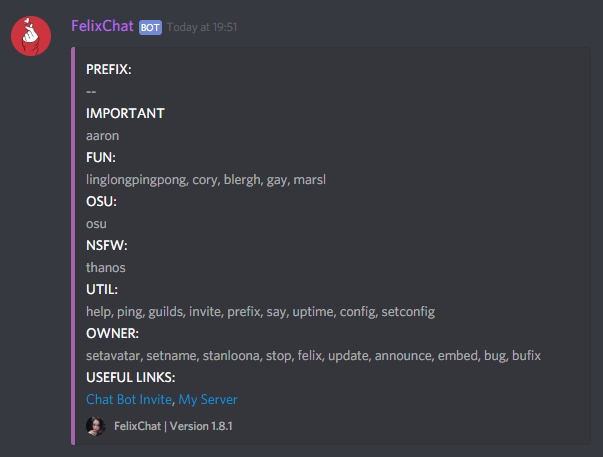

My projects:
My discord bot:

it has different features and can be used for all kinds of things
most notably my osu commands and the server config commands
My bot is hosted on my PC and is NOT online 24/7
My first project with JAVA
My first touch with programming was when I made plugins with JavaI spend a lot of time doing that sadly I deleted everything I made when I got bored of Minecraft
I would like to get back into it though it is really boring if there isn't anyone you do it for
If you are interested in a developer for your Minecraft server message me on discord Felix#9385